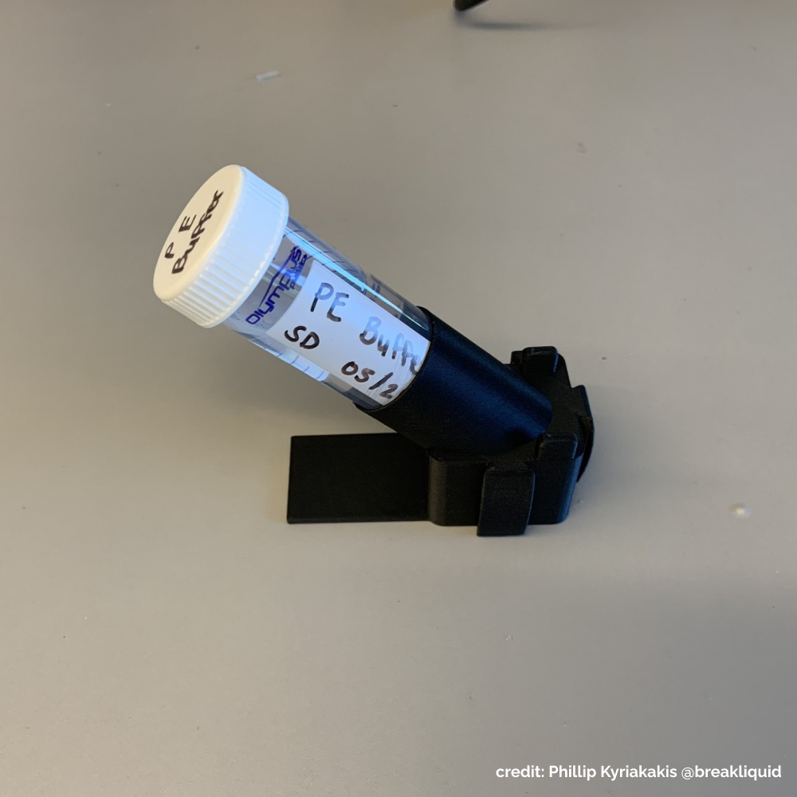
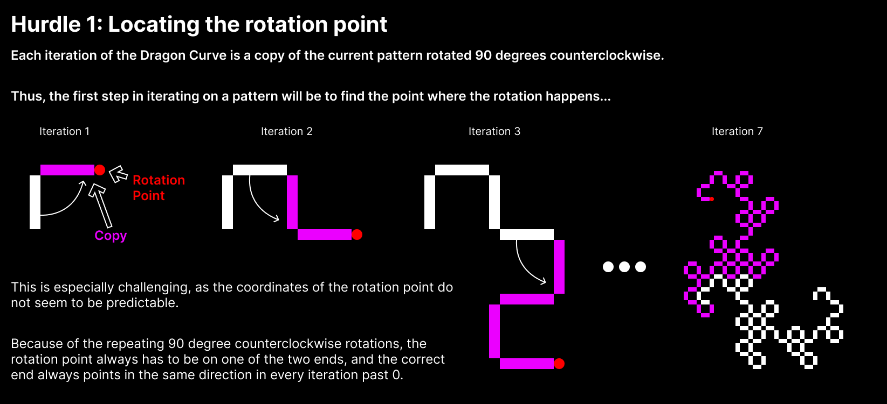

Engineering
CompSci
Art
Activities
Engineering
CompSci
Art
Activities
TL;DR
Full
Greetings! I am Yiunfan Hu, class of 2024 at Ward Melville High School (NY), and formerly at Gunn High School (CA). I love to create things from scratch, whether grand or petit, solo or as a team. I play with engineering, 3D design, coding, music, graphic design, fabric arts, and more.
Greetings! I am Yiunfan Hu, currently a student, class of 2024, at Ward Melville High School in New York and formerly at Gunn High School in California.
I am a maker. I have cultivated an affinity for creation since I was a kid, starting with small projects such as sewing, crocheting, and making bows and arrows using tree branches nearby my house. Over the years, I have developed more skills, taught myself how to code, learned CAD and 3D printing, and played with music arrangement and composing.
While it feels great to enrich my toolbox, I find myself more into the idea of making things rather than specific skills. Whether it is engineering a homemade air purifier, a fractal generating program, or a music piece for a string orchestra, I love the entire process, from developing ideas, researching information, and troubleshooting problems, to eventually realizing the finished product.
My experience living in multiple cities on both coasts significantly shaped my journey as a maker. Moving from MA to CA, and now to NY, I have an extensive record of transfers – attending two kindergartens, two elementary schools, and two high schools. My exposure to different environments and cultures provides an opportunity for me to break the mold, restart a network, and pick up new expertise. Using this advantage, I mastered coding in Palo Alto, CA, the heart of Silicon Valley, and engineering robotics in Long Island, NY.
I further advanced my development during the Covid-19 pandemic. With ample spare time at home, I took apart my first 3D printer and gained a thorough understanding of how it works. I taught myself how to CAD. I started coding at about the same time and completed CS50x, a well-known introductory computer science course offered by Harvard. After moving to New York, I continued to learn by involving myself in engineering classes and Robotics, which both would be unavailable to me if I were in Palo Alto. This would not have been possible without the foundation I established during the pandemic.
For engineering, I became more serious about it after moving to New York. In 2021, I excelled in the Principles of Engineering class at Ward Melville. The following year, I joined the robotics team and served as the head of CAD and design. Outside of school, I design 3D printable alternatives to often expensive lab equipment, with many of them gaining significant traction. I have also sought opportunities to demonstrate my knowledge, presenting an introductory 3D design workshop at Stony Brook on Inventor and 3D printing.
For computer science, my interest began with the simple idea of making a Discord bot, Geckobot. Later, I picked up the dotnet ecosystem to explore more fields such as image processing, APIs, and genetic algorithms. During the summer of 2021, I added C and Python to my toolkit, studied web development, and launched this website. I am also actively involved in the hackathon hosted by Gunn High School, GunnHacks, a 24-hour event where people engage in rapid and collaborative coding. I participated as a competitor in 2021 and returned from NY to CA as an organizer in 2022 and 2023. I also held a Unity workshop on video game design at the 2023 event.
For art, it is another interest in my life. I was first exposed to the violin when I was 6, and I have steadily continued my musical education since. I have actively sought out opportunities to demonstrate my skills whenever possible; I was a member of the district honor orchestra in 4th and 5th grade, continuing to the Fletcher Chamber Orchestra in 6th through 8th, the California All-State Junior High Orchestra in 8th, and the Ward Melville Chamber Orchestra from 10th to 12th. In 7th, I explored composing and arranging music alongside violin, leading me to create an arrangement of Megalovania by Toby Fox, which the school orchestra sight-read. Aside from music, I am also heavily interested in fabric arts, crochet, and graphic design. I first learned how to sew from my mother and crochet from my grandmother.
As I move into the next stage of my life, I hope to be able to continue my passion for creation, build upon my skills, explore new interests, and ultimately do what I enjoy.
Engineering
A 12 lb combat robot named YOB TROHS (SHORT BOY spelled backwards). Designed to compete in the National Havoc Robot League (NHRL), built from scratch over 5 months starting in 11th grade (17 years old)
As a long-time BattleBots fan, I have always wanted to build a combat robot. I spearheaded this project and assembled a team with friends from my school's Robotics team to design, build, and then compete with a full 12 lb robot from scratch. The goal is not only to gain experience with hands-on robotics but also to initiate and establish a new activity for people into robotics in the community.

The majority of the time was spent on designing the bot. Onshape was the design software of choice for its collaborative features, and the final design is viewable here.
I organized the design of the robot, it was one of the largest and most detailed assemblies I had ever created, with every screw and bolt represented. At major versions, I reached out to members of the NHRL community to review our design and communicated what needed to change to the rest of the team. The robot was given the name "YOB TROHS" after someone compared the design as a short version of YOB GNOL.

The components were mostly manufactured in-house. I worked on printing everything we needed, and I learned how to print with exotic filaments like carbon-fiber nylon and TPU for their special properties. To work with metals, My team and I used the school machine shop. Complex parts were made on the lathe and mill, and I learned how to operate the plasma cutter to make the armor.
I also worked on the electronics and code. I soldered all the connectors and joints inside the robot. To translate the controller inputs into our motors, I used an Arduino nano microcontroller and wrote some basic code.
As the target event approached, our combat robot YOB TROHS was put together for the first time and was finally tested.

On the day before the competition, I traveled to the event to finalize the robot before the mandatory safety inspection. YOB TROHS passed safety at a weight of 11.98 lbs, barely making the 12 lb cut-off.

Many last-minute surprises and fixes awaited us. During one of our tests, the weapon hit its own pulley and exploded, so we were forced to go into our first fight without a weapon. Our first match was Whomper, a terrifying horizontal spinner. The results were not good, Whomper had bent one of the frame sides, bending the gearbox axle underneath.
The builder community is a very friendly environment, and we got tips from many of the other competitors after the match. To repair our robot, I took the bent parts to the competitor machine shop and bent most of the components back into a usable shape with a press. The second match was against Darkstar. The newly-repaired YOB TROHS went the whole 3 minutes and managed to engage Darkstar properly.

Engineering
CS
A Raspberry Pi powered Laptop. Designed with a fully 3D printable case, modular electronics, and custom functionality written in C; built in 11th grade (16 years old)

I wanted to create a computer device that is truly customized to my needs. It needed to be small, lightweight, fit inside my bag, plus a large screen area to work on. With my interest in electronics and the lack of variety in pre-built laptops, I made my own, a self-built laptop.
Self-built laptops are fairly rare. This is mostly because compact computer parts are rarely sold, especially not in a form meant for DIY hobbyists. Thus, as a base to work on, the Raspberry Pi stood out as the best option available, being small, efficient, and reasonably powerful.
I composed my laptop with two modules. One is the compute module including a Raspberry Pi 4 powered by a 40000mAh battery and a breadboard for electronics. The other is the interface module including two 10-inch touchscreens and an optional remote keyboard.
I designed and 3D printed the housing framework to integrate both modules in a compact fashion. The design process was significantly more rigorous than it appears. Space efficiency was key. Every part had to fit perfectly using minimum space. The shell of the display module was a legitimate challenge to make and assemble. The margin of error is extremely small. The sensitive touchscreens needed to be delicately pressed and secured into the shell. The wiring for both monitors also needed to be run through an internal channel and carefully linked up.

On the software front, I chose Ubuntu Linux, as it is fully capable of browsing the internet and supporting most development tools that a daily driver would need.
With my unique hardware configuration, it took significant work to get Ubuntu fully functional. One of these problems was mapping the touchscreen input onto the correct screen and I spent many nights working on this one problem.
When required, I can also emulate Windows applications using Wine and Box86, as shown below with the iconic Windows 3D Pinball Space Cadet.
Taking advantage of the Raspberry Pi structure, I designed my laptop as an expandable system that can be easily used as a component of future electronics projects. Through controlling the GPIO pins, using the C programming language, I used this functionality to install a power button and an automatic cooling fan.
While my homemade laptop is not outright comparable to an expensive commercial product, it only costs around $250 and is much more useful being designed around my daily use-case. My design reached a great balance between economics, functionality, and my personal needs.

CS
Art
A customizable mosaic maker in C# and one of the most complete and advanced piece of software I have created. Started in 9th grade (14 years old).

I wanted to design something that could create mosaics from a selection of smaller images.

A mosaic maker replaces pixels in an image with smaller images pulled from an image set that closest matches each pixel's color. As my set, I used a collection of images I collaboratively drew with a friend of mine known as the Gecko Collection, thus I named this project the "Geckoinator". The code is written in C# and built upon my experience and interest in image processing.
Generating the mosaic can be divided into two primary steps: pixelizing and tiling. After the user inputs an image, in pixelizing, the image's quality is reduced to the desired amount (this controls the resolution of the final output). Then, in tiling, each of the new pixels is replaced by a smaller image that closest matches the color of that pixel.

After the basic framework was finished, I realized there was a problem with bands of color forming due to the fewer available colors in the image set. To fix this issue, I introduced a feature to improve the quality of the images known as Floyd-Steinberg dithering. Dithering in graphics is a technique using a combination of colors placed next to each other to create an illusion of an intended color. An example would be early comic books, which were limited by how many colors they could print and commonly employed this tactic. This helps eliminate color banding by smoothing the transition between two colors. It also increases the accuracy of the colors in the output.

Floyd-Steinberg dithering works by scanning through an image pixel by pixel. On each pixel, the difference between the original color and the closest available color is added to the neighboring pixels in a predetermined pattern (as shown above). Thus, instead of the error being lost with each pixel, it is preserved in other pixels.
This algorithm is integrated between the pixelizing and tiling steps and applies the error dispersion to the entire image. This addition greatly improves the color depth and appearance of the output images, especially when viewed from a distance where they can even be passable as unedited images.

I also introduced batch processing and multithreading in order to be able to process videos and of course...(best experienced in full 4K and fullscreen)
I would probably consider this one of my, if not, the most technically challenging programs I have ever written. This used a lot of skill involving array processing and algorithms.

Engineering
A modularized tube rack set based on my novel joint design called Spring Dove tail. Designed to be freely assembled by needs and disassemble with ease.
It's one of my proudest designs so far. I designed a new joinery to modularize 3D-printed items, by adding my own touch to the historical dovetail joint of woodworking. I coined the term "Spring Dovetail" for it.
An extra curved spring layer is added in the dovetail junction to buffer printing errors and prevent over-tight/loose engagement.

A good application of my Spring Dovetail design is for a system of modularized tube rack sets. Existing commercial products consist of a single molded part with a large footprint. This makes them difficult to use, especially when many tube types are required in the experiments. I thus designed modularized racks that can connect together via Spring Dovetail. The spring tension is fine-tuned to be just right so the block units can be connected and disconnected without much hassle and still stay together.

This design ended up being one of my most popular and gained a lot of traction online. The original editable files are also shared with the public under Creative Commons Licensing. Not only are they used by many, but also some derived versions are customized by the community, including integrated into a commercial product made by a startup company integrating my design into their commercial bio-reactor products.

CS
Two fractal generators in C that I used as challenges to further my skills. Started in 9th grade and revisited in 11th grade (16 years old).
When I was taking CS50x, I was introduced to the concept of recursion. With this new knowledge, I wondered if I could use this to make some fractals. The first one I wanted to try was a Sierpinski triangle. After finishing the CS50 assignment for the week, I got to work on my generator using C. The generation method I went for was duplication, I took the previous shape and added two more copies of it below.

After more than a year, I was messing around with C during a CS club meeting. This time I aimed for the much more difficult dragon curve to recreate. Like the first, I would use C for the added challenge. It would take a lot of head-scratching and 5 days to complete.
One of the classic and most simple ways to produce a dragon curve is to repeatedly fold a piece of paper in half in the same direction, then unfold it at right angles. It was this idea that inspired my approach.
To emulate unfolding a piece of paper at a right angle, I start with a line. A copy of that line is created, rotated 90 degrees, then attached to the original at a rotation point. Taking the output, the process can be repeated on it, and so on... This is the core concept of this project is built on.
To convert my idea into code, I decided to draw out my thinking onto paper. I noticed some patterns in the iterations when I drew them out, and came up with a step-by-step algorithm to get the job done.

The resulting algorithm consists of three major hurdles.
First, the location of the rotation point is needed to know where to merge the pieces together.
Next, the size of the final output is needed to create a container large enough to house it.
With both pieces of information, the original and copy can be joined together to create the output.
With a method figured out, it was trivial to implement it into code. By the morning of day 5, I had finished the program. It worked for all iterations I tested, up to 20.

As the final touch to the programs, I made a C# script that converted the ASCII outputs of the C code into pixels on an image which greatly improved their viewability.
Art
The original soundtrack for the hackathon project, "Well Chess but Actually No".
I composed this 3-piece music set for the game that my friends and I created in the 2021 hackathon at Gunn High (GunnHacks 7.0). Importantly, the music was composed within 36 hours hackathon time limitation, in addition to my coding work for the game.
While finished within the time limitation, and I like the final product very much. We had 36 hours to finish the entire project, and I was fully responsible for the musical aspects. I wanted to compose four tracks initially. A game intro and a menu theme, which would be merged into one. A normal battle theme for matches, and a special battle theme inspired by boss fight themes.
The Menu theme from Well Chess but Actually No, remastered version:The Battle theme from Well Chess but Actually No, remastered version:The Special Battle theme from Well Chess but Actually No, remastered version:
Additionally, around the same time as this set, I also composed a soundtrack for another game I created, including total 28 soundtracks for all different stages and themes in the game. The soundtrack can be found under the name "The Crest" in my full art category or my musescore collection.

My primary workspace. Converted from a bedroom, it is where I do all my coding and prototyping, with access to my computer, and adjacent printing closet. Most of the time, my in-progress projects can be found splayed out in this area. The low shelf separating my corner is used as a display area for my previous projects.
My area for more intensive work. Orignally the family room, I converted the space into a shared working space. It functions as my gardening area, soldering station, woodworking, and metalworking shop. It is a great general purpose work enviroment, and the multiple tables can be shifted around to any required configuration.

My printer room for all things 3D printing. It is a walk-in closet in the study room turned walk-in printer room. With a separate printer room, the conditions inside are much more stable and I can print much more reliably. It also keeps all my printing equipment neatly out of sight and helps to isolate the noise.
My array consists of four Monoprice printers (Ordered by date obtained: MP10 mini, Maker Select, Ultimate, MP10), each with unique capabilities.